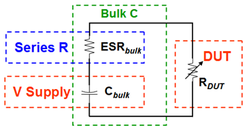
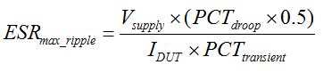

Step 2: Calculate the max. ESR
This is the second of five steps in the Power Distribution Network (PDN) design. Use the UHC4 / UHC4T impedance calculation spreadsheet to semi-automate your design process.
Equivalent series resistance (ESR) causes a voltage drop (droop) in the supply when the DUT draws power from the capacitors in the PDN.

One realistic use case scenario is to presume that half of the voltage droop is caused by the ESR and the other half is the decaying capacitor voltage, as the local capacitor is discharging. To satisfy this model, you need to calculate the maximum allowed parallel capacitor ESR value. In turn, this will become a limit on how much capacitance you can use.
With the previous inputs the spreadsheet also calculates the allowed total ESRmax_ripple to prevent supply voltage droop & kick:

| Variable | Unit | Description | Calculator text and cell | |
|---|---|---|---|---|
| ESRmax_ripple | mΩ (Milli‑Ohm) | Calculated max. PDN impedance for parallel capacitor ESR to meet ripple requirement. | Target ESR (maximum) | D19 |
| Vsupply | V (Volt) | Supply voltage (Volts) | Supply Voltage | D12 |
| PCTdroop x 0.5 | % (Percent) | Allowable amount of supply droop or kick for IR drop across the capacitor ESR. | Max Ripple Voltage | D14 |
| IDUT | A (Ampere) | Maximum DUT supply current | Max DUT Current | D13 |
| PCTtransient | % (Percent) | Percentage of maximum transient current relative to maximum DUT supply current. | Max Current Transient | D15 |
Continue with Step 3: Calculate max. ceramics
Functional changes
- Introduced in SmarTest 7.2.1